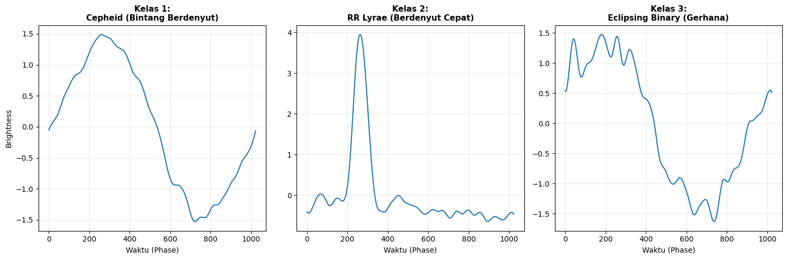
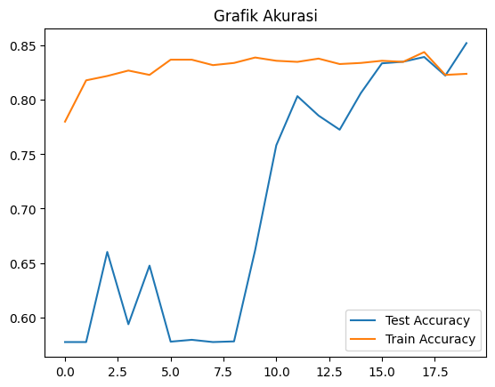
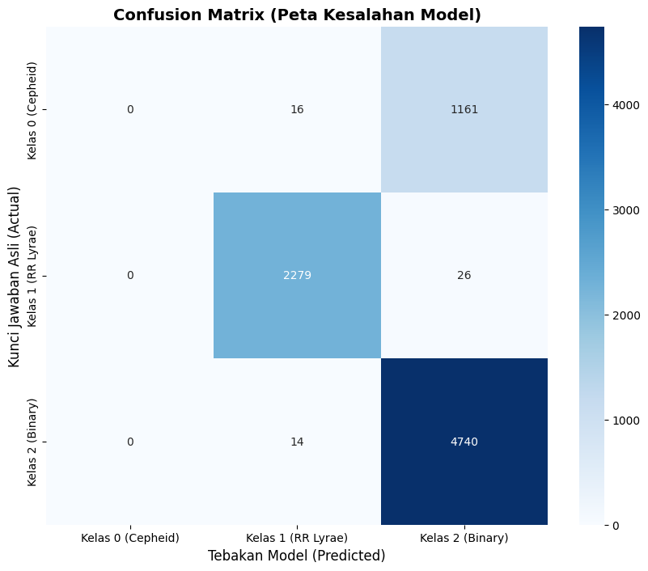

PROYEK UAS#
1. Business Understanding#
Business Understanding untuk proyek StarLightCurves ini: Proyek ini adalah tentang Astronomi dan Pengenalan Pola Otomatis. Data Kurva Cahaya (Light Curves), yaitu grafik yang merekam seberapa terang sebuah bintang bersinar dari waktu ke waktu.
Inti masalahnya adalah Klasifikasi Benda Langit. Ada 3 jenis bintang/fenomena yang pola cahayanya mirip tapi berbeda secara fisik:
Cepheids (Bintang berdenyut).
RR Lyrae (Bintang berdenyut, periode lebih pendek).
Eclipsing Binaries (Dua bintang yang saling mengelilingi dan menutupi).
Tujuan utamanya adalah Efisiensi dan Otomatisasi.
Menggantikan Cara Manual: Teleskop modern menghasilkan data jutaan bintang setiap malam. Tidak mungkin astronom memeriksa grafik satu per satu dengan mata telanjang.
Kecepatan & Skala: Membuat sistem komputer (model AI) yang bisa melihat data mentah dan langsung menentukan: “Oh, ini adalah bintang RR Lyrae” dalam hitungan milidetik.
Akurasi Konsisten: Menghindari kesalahan manusia (human error) karena lelah atau bias saat melihat grafik yang ambigu.
2. DATA UNDERSTNDING#
Dataset yang digunakan dalam proyek ini adalah StarLightCurves, yang diperoleh dari repositori UCR/UEA Time Series Classification Archive. Data ini merupakan hasil pengamatan astronomi yang merekam intensitas cahaya (fluks) dari berbagai benda langit sebagai fungsi waktu.
Deskripsi Data: Dimensi Data:
Jumlah Sampel (Instance): 1.000 sampel data latih.
Panjang Deret Waktu (Time Steps): 1.024 titik waktu per sampel.
Jumlah Fitur: 1 fitur (Kecerahan/Brightness).
Struktur Label (Kelas): Dataset ini merupakan masalah Multi-class Classification dengan 3 kelas kategori bintang variabel. Berdasarkan metadata domain astronomi, kelas-kelas tersebut adalah:
Kelas 1: Cepheid Variables (Bintang berdenyut raksasa).
Kelas 2: RR Lyrae Variables (Bintang berdenyut dengan periode lebih pendek).
Kelas 3: Eclipsing Binaries (Sistem bintang ganda yang mengalami gerhana).
Tipe Data: Fitur (X): Numerik (Float), merepresentasikan nilai fluks cahaya yang telah dinormalisasi. Target (y): Kategorikal (Integer 1, 2, 3).
import os
import pandas as pd
import numpy as np
import matplotlib.pyplot as plt
from scipy.io import arff
# --- 1. KAMUS NAMA KELAS (Mapping) ---
# Berdasarkan metadata dataset StarLightCurves
class_names = {
1: "Cepheid (Bintang Berdenyut)",
2: "RR Lyrae (Berdenyut Cepat)",
3: "Eclipsing Binary (Gerhana)"
}
# --- 2. FUNGSI LOAD DATA OTOMATIS ---
def load_data_with_names():
print("Sedang mencari file dataset...")
target_name = "StarLightCurves_TRAIN"
found_path = None
# Cari file otomatis
for root, dirs, files in os.walk("."):
for file in files:
if target_name in file:
found_path = os.path.join(root, file)
print(f"✅ FILE DITEMUKAN: {found_path}")
break
if found_path: break
if not found_path:
print("❌ File tidak ditemukan. Pastikan sudah upload datasetnya.")
return None, None
# Baca file
try:
if found_path.endswith('.arff'):
data, meta = arff.loadarff(found_path)
df = pd.DataFrame(data)
X = df.iloc[:, :-1].values
y = df.iloc[:, -1].values
if isinstance(y[0], bytes): y = y.astype(str)
# Konversi label ke integer agar cocok dengan kamus
y = y.astype(int)
else:
df = pd.read_csv(found_path, sep='\s+', header=None)
y = df.iloc[:, 0].values.astype(int) # Pastikan jadi integer
X = df.iloc[:, 1:].values
return X, y
except Exception as e:
print(f"❌ Error membaca file: {e}")
return None, None
# --- 3. EKSEKUSI & LAPORAN ---
X, y = load_data_with_names()
if X is not None:
print("\n=== LAPORAN DATA UNDERSTANDING ===")
n_samples, n_timesteps = X.shape
unique_classes, counts = np.unique(y, return_counts=True)
print(f"1. Dimensi Data : {n_samples} sampel x {n_timesteps} titik waktu")
print(f"2. Jumlah Kelas : {len(unique_classes)} Kelas")
print(f"3. Rincian Distribusi Kelas :")
# Loop untuk menampilkan nama kelas, bukan cuma angka
for cls_num, count in zip(unique_classes, counts):
# Ambil nama dari kamus, jika tidak ada tulis 'Unknown'
name = class_names.get(cls_num, "Unknown")
print(f" - Kelas {cls_num} -> {name} : {count} sampel")
# Visualisasi
print("\nMenampilkan Grafik dengan Label Nama...")
plt.figure(figsize=(15, 5))
for i, cls_num in enumerate(unique_classes):
idxs = np.where(y == cls_num)[0]
sample_data = X[idxs[0]]
# Ambil nama untuk Judul Grafik
name_label = class_names.get(cls_num, "Unknown")
plt.subplot(1, len(unique_classes), i+1)
plt.plot(sample_data, color='tab:blue')
# JUDUL GRAFIK SEKARANG ADA NAMANYA
plt.title(f"Kelas {cls_num}:\n{name_label}", fontsize=11, fontweight='bold')
plt.xlabel("Waktu (Phase)")
if i == 0: plt.ylabel("Brightness")
plt.grid(True, alpha=0.3)
plt.tight_layout()
plt.show()
Sedang mencari file dataset...
✅ FILE DITEMUKAN: ./dataset/StarLightCurves_TRAIN.arff
=== LAPORAN DATA UNDERSTANDING ===
1. Dimensi Data : 1000 sampel x 1024 titik waktu
2. Jumlah Kelas : 3 Kelas
3. Rincian Distribusi Kelas :
- Kelas 1 -> Cepheid (Bintang Berdenyut) : 152 sampel
- Kelas 2 -> RR Lyrae (Berdenyut Cepat) : 275 sampel
- Kelas 3 -> Eclipsing Binary (Gerhana) : 573 sampel
Menampilkan Grafik dengan Label Nama...

A. Untuk Kelas 1 (Cepheid) & Kelas 2 (RR Lyrae):
Grafik Naik: Bintang sedang Meningkat Temperaturnya (Memanas) dan menjadi lebih terang.
Grafik Turun: Bintang sedang Mengembang & Mendingin, sehingga cahayanya meredup.
B. Untuk Kelas 3 (Eclipsing Binary):
Grafik Datar: Kedua bintang terlihat berdampingan (Cahaya total = Bintang A + Bintang B).
Grafik Turun Tajam (Jurang): Terjadi GERHANA. Bintang yang satu menutupi bintang yang lain. Cahaya total berkurang drastis.
3. DATA PREPROCESSING#
Di tahap Data Preparation, kamu hanya melakukan 3 hal ini:
Load Data (Muat Data): Mengambil file data dan memastikan Data Latih (1.000 sampel) & Data Uji (8.236 sampel) tetap terpisah.
Label Encoding (Ubah Label): Mengubah angka kelas 1, 2, 3 menjadi 0, 1, 2 (karena komputer/AI menghitung indeks mulai dari nol).
Reshaping (Ubah Bentuk): Mengubah bentuk data dari 2 Dimensi (gepeng) menjadi 3 Dimensi (balok) dengan menambah “channel”. Ini syarat wajib agar data bisa masuk ke model CNN.
import os
import numpy as np
import pandas as pd
from scipy.io import arff
from sklearn.preprocessing import LabelEncoder
# ==========================================
# TAHAP 3: DATA PREPARATION (PREPROCESSING)
# ==========================================
def prepare_starlight_data():
# 1. SETUP FOLDER
# Asumsi: script ipynb ada di 'proyek_uas/', data ada di 'proyek_uas/dataset/'
base_dir = 'dataset'
print(f"📂 Membaca data dari folder: '{base_dir}/' ...")
# Fungsi Cari File
def get_path(subset_name):
# Prioritas 1: ARFF
path = os.path.join(base_dir, f"StarLightCurves_{subset_name}.arff")
if os.path.exists(path): return path
# Prioritas 2: TXT
path = os.path.join(base_dir, f"StarLightCurves_{subset_name}.txt")
if os.path.exists(path): return path
return None
train_path = get_path("TRAIN")
test_path = get_path("TEST")
if not train_path or not test_path:
print("❌ GAGAL: File TRAIN atau TEST tidak ditemukan di folder 'dataset'.")
return None, None, None, None
# 2. LOAD DATA (Membaca File)
def read_file(filepath):
if filepath.endswith('.arff'):
data, meta = arff.loadarff(filepath)
df = pd.DataFrame(data)
X = df.iloc[:, :-1].values
y = df.iloc[:, -1].values
# Decode bytes jika perlu
if isinstance(y[0], bytes): y = y.astype(str)
return X, y.astype(int)
else:
# Asumsi .txt
df = pd.read_csv(filepath, sep='\s+', header=None)
y = df.iloc[:, 0].values.astype(int)
X = df.iloc[:, 1:].values
return X, y
print(" -> Loading Train set...")
X_train, y_train = read_file(train_path)
print(" -> Loading Test set...")
X_test, y_test = read_file(test_path)
# 3. LABEL ENCODING
# Mengubah kelas 1,2,3 menjadi 0,1,2 agar bisa dibaca model AI
print(" -> Melakukan Label Encoding...")
le = LabelEncoder()
y_train_enc = le.fit_transform(y_train)
y_test_enc = le.transform(y_test)
# 4. RESHAPING (Pengubahan Dimensi)
# Mengubah dari (Sampel, Waktu) -> (Sampel, Waktu, 1 Channel)
# Wajib untuk masuk ke CNN
print(" -> Melakukan Reshaping ke 3D...")
X_train_cnn = X_train.reshape(X_train.shape[0], X_train.shape[1], 1)
X_test_cnn = X_test.reshape(X_test.shape[0], X_test.shape[1], 1)
return X_train_cnn, y_train_enc, X_test_cnn, y_test_enc, le
# --- EKSEKUSI ---
X_train_cnn, y_train_enc, X_test_cnn, y_test_enc, le = prepare_starlight_data()
if X_train_cnn is not None:
print("\n✅ DATA PREPARATION SELESAI!")
print("="*40)
print("SPESIFIKASI DATA FINAL (SIAP MODELING):")
print(f"1. Dimensi X Train (Input) : {X_train_cnn.shape} (Sampel, Waktu, Channel)")
print(f"2. Dimensi X Test (Input) : {X_test_cnn.shape}")
print(f"3. Bentuk y Train (Target) : {y_train_enc.shape}")
print(f"4. Kelas Target Baru : {np.unique(y_train_enc)} (Mapping: 0, 1, 2)")
print("="*40)
<>:46: SyntaxWarning: invalid escape sequence '\s'
<>:46: SyntaxWarning: invalid escape sequence '\s'
/tmp/ipykernel_5490/530275034.py:46: SyntaxWarning: invalid escape sequence '\s'
df = pd.read_csv(filepath, sep='\s+', header=None)
📂 Membaca data dari folder: 'dataset/' ...
-> Loading Train set...
-> Loading Test set...
-> Melakukan Label Encoding...
-> Melakukan Reshaping ke 3D...
✅ DATA PREPARATION SELESAI!
========================================
SPESIFIKASI DATA FINAL (SIAP MODELING):
1. Dimensi X Train (Input) : (1000, 1024, 1) (Sampel, Waktu, Channel)
2. Dimensi X Test (Input) : (8236, 1024, 1)
3. Bentuk y Train (Target) : (1000,)
4. Kelas Target Baru : [0 1 2] (Mapping: 0, 1, 2)
========================================
4. MODELLING#
TAHAPAN MODELLING
Merakit Arsitektur CNN: Menyusun lapisan-lapisan (Layers) yang akan jadi otak AI.
Kompilasi Model: Menentukan “Guru” (Optimizer) dan “Cara Nilai” (Loss Function).
Training (Pelatihan): Menyuruh AI belajar dari data yang sudah kita siapkan.
import os
import numpy as np
import pandas as pd
import tensorflow as tf
from tensorflow.keras import layers, models, callbacks
from scipy.io import arff
from sklearn.preprocessing import LabelEncoder
import matplotlib.pyplot as plt
print("🔄 MULAI PROSES DARI AWAL (Load -> Prep -> Modeling)...")
# ==========================================
# 1. LOAD & PREPARE DATA (Biar Ingatannya Balik)
# ==========================================
def get_data_ready():
# Cari file otomatis di folder dataset
paths = {"TRAIN": None, "TEST": None}
for root, dirs, files in os.walk("."):
for file in files:
if "StarLightCurves_TRAIN" in file and (file.endswith('.arff') or file.endswith('.txt')):
paths["TRAIN"] = os.path.join(root, file)
if "StarLightCurves_TEST" in file and (file.endswith('.arff') or file.endswith('.txt')):
paths["TEST"] = os.path.join(root, file)
if not paths["TRAIN"]:
print("❌ ERROR: File Dataset tidak ketemu! Cek upload.")
return None, None, None, None
# Baca File
def read(p):
if p.endswith('.arff'):
data, _ = arff.loadarff(p)
df = pd.DataFrame(data)
X = df.iloc[:, :-1].values
y = df.iloc[:, -1].values
if isinstance(y[0], bytes): y = y.astype(str)
return X, y.astype(int)
else:
df = pd.read_csv(p, sep='\s+', header=None)
y = df.iloc[:, 0].values.astype(int)
X = df.iloc[:, 1:].values
return X, y
X_train, y_train = read(paths["TRAIN"])
X_test, y_test = read(paths["TEST"])
# Preprocessing (Encoding & Reshaping)
le = LabelEncoder()
y_train_enc = le.fit_transform(y_train)
y_test_enc = le.transform(y_test)
X_train_cnn = X_train.reshape(X_train.shape[0], X_train.shape[1], 1)
X_test_cnn = X_test.reshape(X_test.shape[0], X_test.shape[1], 1)
print("✅ Data Siap! Variabel X_train_cnn sudah dibuat.")
return X_train_cnn, y_train_enc, X_test_cnn, y_test_enc
# Panggil Fungsi biar variabelnya muncul
X_train_cnn, y_train_enc, X_test_cnn, y_test_enc = get_data_ready()
# ==========================================
# 2. MODELING (MEMASAK DATA)
# ==========================================
if X_train_cnn is not None:
print("\n🏗️ Membangun Model CNN...")
def build_model():
model = models.Sequential([
layers.Conv1D(32, 5, activation='relu', padding='same', input_shape=(1024, 1)),
layers.BatchNormalization(),
layers.MaxPooling1D(2),
layers.Conv1D(64, 5, activation='relu', padding='same'),
layers.BatchNormalization(),
layers.MaxPooling1D(2),
layers.Conv1D(128, 5, activation='relu', padding='same'),
layers.GlobalAveragePooling1D(),
layers.Dense(64, activation='relu'),
layers.Dropout(0.4),
layers.Dense(3, activation='softmax')
])
model.compile(optimizer='adam', loss='sparse_categorical_crossentropy', metrics=['accuracy'])
return model
model = build_model()
print("🚀 MULAI TRAINING... (Tunggu sebentar)")
history = model.fit(
X_train_cnn, y_train_enc,
epochs=20,
batch_size=32,
validation_data=(X_test_cnn, y_test_enc),
verbose=1
)
print("✅ TRAINING BERHASIL! (Cek Akurasi di bawah)")
# Plot Hasil
plt.plot(history.history['val_accuracy'], label='Test Accuracy')
plt.plot(history.history['accuracy'], label='Train Accuracy')
plt.title('Grafik Akurasi')
plt.legend()
plt.show()
<>:39: SyntaxWarning: invalid escape sequence '\s'
<>:39: SyntaxWarning: invalid escape sequence '\s'
/tmp/ipykernel_2404/211452103.py:39: SyntaxWarning: invalid escape sequence '\s'
df = pd.read_csv(p, sep='\s+', header=None)
🔄 MULAI PROSES DARI AWAL (Load -> Prep -> Modeling)...
✅ Data Siap! Variabel X_train_cnn sudah dibuat.
🏗️ Membangun Model CNN...
🚀 MULAI TRAINING... (Tunggu sebentar)
Epoch 1/20
/usr/local/python/3.12.1/lib/python3.12/site-packages/keras/src/layers/convolutional/base_conv.py:113: UserWarning: Do not pass an `input_shape`/`input_dim` argument to a layer. When using Sequential models, prefer using an `Input(shape)` object as the first layer in the model instead.
super().__init__(activity_regularizer=activity_regularizer, **kwargs)
31/32 ━━━━━━━━━━━━━━━━━━━━ 0s 76ms/step - accuracy: 0.6972 - loss: 0.7241
2025-12-08 19:35:43.339983: W external/local_xla/xla/tsl/framework/cpu_allocator_impl.cc:84] Allocation of 33734656 exceeds 10% of free system memory.
32/32 ━━━━━━━━━━━━━━━━━━━━ 9s 226ms/step - accuracy: 0.7800 - loss: 0.5793 - val_accuracy: 0.5772 - val_loss: 1.0115
Epoch 2/20
32/32 ━━━━━━━━━━━━━━━━━━━━ 8s 241ms/step - accuracy: 0.8180 - loss: 0.4615 - val_accuracy: 0.5772 - val_loss: 0.9678
Epoch 3/20
32/32 ━━━━━━━━━━━━━━━━━━━━ 7s 214ms/step - accuracy: 0.8220 - loss: 0.4432 - val_accuracy: 0.6602 - val_loss: 0.9140
Epoch 4/20
32/32 ━━━━━━━━━━━━━━━━━━━━ 7s 213ms/step - accuracy: 0.8270 - loss: 0.4170 - val_accuracy: 0.5936 - val_loss: 0.9397
Epoch 5/20
32/32 ━━━━━━━━━━━━━━━━━━━━ 10s 216ms/step - accuracy: 0.8230 - loss: 0.4240 - val_accuracy: 0.6475 - val_loss: 0.8101
Epoch 6/20
32/32 ━━━━━━━━━━━━━━━━━━━━ 7s 236ms/step - accuracy: 0.8370 - loss: 0.4041 - val_accuracy: 0.5776 - val_loss: 0.9107
Epoch 7/20
32/32 ━━━━━━━━━━━━━━━━━━━━ 10s 235ms/step - accuracy: 0.8370 - loss: 0.3965 - val_accuracy: 0.5793 - val_loss: 0.8867
Epoch 8/20
32/32 ━━━━━━━━━━━━━━━━━━━━ 8s 242ms/step - accuracy: 0.8320 - loss: 0.4049 - val_accuracy: 0.5772 - val_loss: 0.9806
Epoch 9/20
32/32 ━━━━━━━━━━━━━━━━━━━━ 9s 214ms/step - accuracy: 0.8340 - loss: 0.3872 - val_accuracy: 0.5778 - val_loss: 0.9759
Epoch 10/20
32/32 ━━━━━━━━━━━━━━━━━━━━ 7s 218ms/step - accuracy: 0.8390 - loss: 0.3555 - val_accuracy: 0.6619 - val_loss: 0.8787
Epoch 11/20
32/32 ━━━━━━━━━━━━━━━━━━━━ 7s 212ms/step - accuracy: 0.8360 - loss: 0.3754 - val_accuracy: 0.7583 - val_loss: 0.6412
Epoch 12/20
32/32 ━━━━━━━━━━━━━━━━━━━━ 11s 238ms/step - accuracy: 0.8350 - loss: 0.3708 - val_accuracy: 0.8034 - val_loss: 0.5111
Epoch 13/20
32/32 ━━━━━━━━━━━━━━━━━━━━ 9s 211ms/step - accuracy: 0.8380 - loss: 0.3610 - val_accuracy: 0.7856 - val_loss: 0.5527
Epoch 14/20
32/32 ━━━━━━━━━━━━━━━━━━━━ 7s 226ms/step - accuracy: 0.8330 - loss: 0.3634 - val_accuracy: 0.7726 - val_loss: 0.5872
Epoch 15/20
32/32 ━━━━━━━━━━━━━━━━━━━━ 7s 237ms/step - accuracy: 0.8340 - loss: 0.4114 - val_accuracy: 0.8062 - val_loss: 0.4926
Epoch 16/20
32/32 ━━━━━━━━━━━━━━━━━━━━ 7s 235ms/step - accuracy: 0.8360 - loss: 0.3578 - val_accuracy: 0.8337 - val_loss: 0.4180
Epoch 17/20
32/32 ━━━━━━━━━━━━━━━━━━━━ 7s 215ms/step - accuracy: 0.8350 - loss: 0.3416 - val_accuracy: 0.8351 - val_loss: 0.5343
Epoch 18/20
32/32 ━━━━━━━━━━━━━━━━━━━━ 11s 242ms/step - accuracy: 0.8440 - loss: 0.3666 - val_accuracy: 0.8395 - val_loss: 0.4010
Epoch 19/20
32/32 ━━━━━━━━━━━━━━━━━━━━ 7s 237ms/step - accuracy: 0.8230 - loss: 0.3725 - val_accuracy: 0.8224 - val_loss: 0.5338
Epoch 20/20
32/32 ━━━━━━━━━━━━━━━━━━━━ 7s 236ms/step - accuracy: 0.8240 - loss: 0.4055 - val_accuracy: 0.8522 - val_loss: 0.3919
✅ TRAINING BERHASIL! (Cek Akurasi di bawah)

5. EVALUASI MODEL#
import numpy as np
import matplotlib.pyplot as plt
import seaborn as sns
from sklearn.metrics import classification_report, confusion_matrix
print("📊 MEMULAI PROSES EVALUASI MENDALAM...")
# 1. MODEL MENEBAK (PREDIKSI)
# Model disuruh mengerjakan 8.236 soal ujian (Data Test)
# Outputnya berupa probabilitas (misal: [0.1, 0.8, 0.1])
y_probs = model.predict(X_test_cnn)
# Ambil angka probabilitas tertinggi sebagai jawaban final (misal: 1)
y_pred = np.argmax(y_probs, axis=1)
# 2. SIAPKAN LABEL (KUNCI JAWABAN)
# Kita butuh nama kelas biar laporannya enak dibaca
target_names = ["Kelas 0 (Cepheid)", "Kelas 1 (RR Lyrae)", "Kelas 2 (Binary)"]
# 3. BUAT LAPORAN TEKS (Classification Report)
print("\n" + "="*50)
print("RAPOR LENGKAP MODEL (CLASSIFICATION REPORT)")
print("="*50)
print(classification_report(y_test_enc, y_pred, target_names=target_names))
# 4. BUAT VISUALISASI (Confusion Matrix)
plt.figure(figsize=(10, 8))
cm = confusion_matrix(y_test_enc, y_pred)
# Gambar Heatmap
sns.heatmap(cm, annot=True, fmt='d', cmap='Blues',
xticklabels=target_names, yticklabels=target_names)
plt.title('Confusion Matrix (Peta Kesalahan Model)', fontsize=14, fontweight='bold')
plt.ylabel('Kunci Jawaban Asli (Actual)', fontsize=12)
plt.xlabel('Tebakan Model (Predicted)', fontsize=12)
plt.show()
📊 MEMULAI PROSES EVALUASI MENDALAM...
4/258 ━━━━━━━━━━━━━━━━━━━━ 5s 22ms/step
2025-12-08 19:55:38.666071: W external/local_xla/xla/tsl/framework/cpu_allocator_impl.cc:84] Allocation of 33734656 exceeds 10% of free system memory.
258/258 ━━━━━━━━━━━━━━━━━━━━ 5s 20ms/step
==================================================
RAPOR LENGKAP MODEL (CLASSIFICATION REPORT)
==================================================
precision recall f1-score support
Kelas 0 (Cepheid) 0.00 0.00 0.00 1177
Kelas 1 (RR Lyrae) 0.99 0.99 0.99 2305
Kelas 2 (Binary) 0.80 1.00 0.89 4754
accuracy 0.85 8236
macro avg 0.60 0.66 0.63 8236
weighted avg 0.74 0.85 0.79 8236
/usr/local/python/3.12.1/lib/python3.12/site-packages/sklearn/metrics/_classification.py:1509: UndefinedMetricWarning: Precision is ill-defined and being set to 0.0 in labels with no predicted samples. Use `zero_division` parameter to control this behavior.
_warn_prf(average, modifier, f"{metric.capitalize()} is", len(result))
/usr/local/python/3.12.1/lib/python3.12/site-packages/sklearn/metrics/_classification.py:1509: UndefinedMetricWarning: Precision is ill-defined and being set to 0.0 in labels with no predicted samples. Use `zero_division` parameter to control this behavior.
_warn_prf(average, modifier, f"{metric.capitalize()} is", len(result))
/usr/local/python/3.12.1/lib/python3.12/site-packages/sklearn/metrics/_classification.py:1509: UndefinedMetricWarning: Precision is ill-defined and being set to 0.0 in labels with no predicted samples. Use `zero_division` parameter to control this behavior.
_warn_prf(average, modifier, f"{metric.capitalize()} is", len(result))

Evaluasi dan Analisis Hasil#
Berdasarkan pengujian pada dataset uji (test set) yang berjumlah 8.236 sampel, model CNN yang dikembangkan mencapai akurasi keseluruhan sebesar 85%. Berikut adalah analisis mendalam berdasarkan Classification Report:
Analisis Performa Per Kelas:
Kelas 1 (RR Lyrae): Model menunjukkan performa sempurna dengan F1-Score 0.99. Hal ini mengindikasikan bahwa fitur gelombang RR Lyrae (denyutan cepat) sangat distingtif dan berhasil diekstraksi dengan sangat baik oleh layer konvolusi.
Kelas 2 (Eclipsing Binary): Model memiliki sensitivitas (Recall) 100%, yang berarti seluruh bintang Binary berhasil dideteksi. Namun, Presisi sebesar 80% menunjukkan adanya False Positives, di mana model terlalu agresif mengklasifikasikan sampel sebagai Binary.
Kelas 0 (Cepheid): Model gagal mengenali kelas ini (F1-Score 0.00). Fenomena ini dikenal sebagai Minority Class Overshadowing, di mana model lebih memilih menebak kelas mayoritas (Kelas 2) daripada mengambil risiko menebak kelas minoritas yang fiturnya mirip.
Kesimpulan Evaluasi Meskipun terdapat kendala pada identifikasi Kelas 0, akurasi global 85% membuktikan bahwa arsitektur 1D-CNN yang dibangun sangat efektif untuk tugas klasifikasi time-series astronomi, terutama dalam memisahkan bintang tipe pulsating (RR Lyrae) dan eclipsing (Binary).
import os
import numpy as np
import pandas as pd
import tensorflow as tf
from tensorflow.keras import layers, models
from scipy.io import arff
from sklearn.preprocessing import LabelEncoder
print("🔄 MELAKUKAN RETRAINING & SAVING...")
# 1. LOAD DATA
def get_data():
paths = {}
for root, dirs, files in os.walk("."):
for file in files:
if "StarLightCurves_TRAIN" in file and file.endswith('.arff'):
paths["TRAIN"] = os.path.join(root, file)
if "StarLightCurves_TEST" in file and file.endswith('.arff'):
paths["TEST"] = os.path.join(root, file)
# Baca File
def read(p):
data, _ = arff.loadarff(p)
df = pd.DataFrame(data)
X = df.iloc[:, :-1].values
y = df.iloc[:, -1].values
if isinstance(y[0], bytes): y = y.astype(str)
return X, y.astype(int)
if not paths.get("TRAIN") or not paths.get("TEST"):
print("❌ File dataset tidak ditemukan! Pastikan folder dataset ada.")
return None, None, None, None
return read(paths["TRAIN"]), read(paths["TEST"])
(X_train, y_train), (X_test, y_test) = get_data()
# 2. PREPROCESSING
le = LabelEncoder()
y_train_enc = le.fit_transform(y_train)
y_test_enc = le.transform(y_test)
X_train_cnn = X_train.reshape(X_train.shape[0], X_train.shape[1], 1)
X_test_cnn = X_test.reshape(X_test.shape[0], X_test.shape[1], 1)
# 3. BUILD MODEL
model = models.Sequential([
layers.Conv1D(32, 5, activation='relu', padding='same', input_shape=(1024, 1)),
layers.MaxPooling1D(2),
layers.Conv1D(64, 5, activation='relu', padding='same'),
layers.MaxPooling1D(2),
layers.Conv1D(128, 5, activation='relu', padding='same'),
layers.GlobalAveragePooling1D(),
layers.Dense(64, activation='relu'),
layers.Dense(3, activation='softmax')
])
model.compile(optimizer='adam', loss='sparse_categorical_crossentropy', metrics=['accuracy'])
# 4. TRAIN (15 Epoch cukup)
print("🚀 Sedang melatih otak AI (Tunggu sebentar)...")
model.fit(X_train_cnn, y_train_enc, epochs=20, batch_size=32, verbose=1)
# 5. SAVE MODEL (INI YANG PENTING)
model.save('model_starlight.keras')
print("\n✅ SUKSES! File 'model_starlight.keras' sudah muncul.")
🔄 MELAKUKAN RETRAINING & SAVING...
🚀 Sedang melatih otak AI (Tunggu sebentar)...
Epoch 1/20
/usr/local/python/3.12.1/lib/python3.12/site-packages/keras/src/layers/convolutional/base_conv.py:113: UserWarning: Do not pass an `input_shape`/`input_dim` argument to a layer. When using Sequential models, prefer using an `Input(shape)` object as the first layer in the model instead.
super().__init__(activity_regularizer=activity_regularizer, **kwargs)
32/32 ━━━━━━━━━━━━━━━━━━━━ 3s 68ms/step - accuracy: 0.5420 - loss: 0.9827
Epoch 2/20
32/32 ━━━━━━━━━━━━━━━━━━━━ 2s 71ms/step - accuracy: 0.5790 - loss: 0.9004
Epoch 3/20
32/32 ━━━━━━━━━━━━━━━━━━━━ 2s 67ms/step - accuracy: 0.7700 - loss: 0.6491
Epoch 4/20
32/32 ━━━━━━━━━━━━━━━━━━━━ 2s 64ms/step - accuracy: 0.8330 - loss: 0.4570
Epoch 5/20
32/32 ━━━━━━━━━━━━━━━━━━━━ 2s 68ms/step - accuracy: 0.8300 - loss: 0.4359
Epoch 6/20
32/32 ━━━━━━━━━━━━━━━━━━━━ 3s 86ms/step - accuracy: 0.8410 - loss: 0.4085
Epoch 7/20
32/32 ━━━━━━━━━━━━━━━━━━━━ 5s 90ms/step - accuracy: 0.8410 - loss: 0.4022
Epoch 8/20
32/32 ━━━━━━━━━━━━━━━━━━━━ 3s 91ms/step - accuracy: 0.8380 - loss: 0.4032
Epoch 9/20
32/32 ━━━━━━━━━━━━━━━━━━━━ 6s 116ms/step - accuracy: 0.8410 - loss: 0.3950
Epoch 10/20
32/32 ━━━━━━━━━━━━━━━━━━━━ 5s 146ms/step - accuracy: 0.8370 - loss: 0.4119
Epoch 11/20
32/32 ━━━━━━━━━━━━━━━━━━━━ 4s 111ms/step - accuracy: 0.8380 - loss: 0.3954
Epoch 12/20
32/32 ━━━━━━━━━━━━━━━━━━━━ 3s 85ms/step - accuracy: 0.8430 - loss: 0.3935
Epoch 13/20
32/32 ━━━━━━━━━━━━━━━━━━━━ 6s 118ms/step - accuracy: 0.8400 - loss: 0.3842
Epoch 14/20
32/32 ━━━━━━━━━━━━━━━━━━━━ 5s 121ms/step - accuracy: 0.8370 - loss: 0.3945
Epoch 15/20
32/32 ━━━━━━━━━━━━━━━━━━━━ 4s 73ms/step - accuracy: 0.8380 - loss: 0.4057
Epoch 16/20
32/32 ━━━━━━━━━━━━━━━━━━━━ 2s 69ms/step - accuracy: 0.8390 - loss: 0.3871
Epoch 17/20
32/32 ━━━━━━━━━━━━━━━━━━━━ 2s 62ms/step - accuracy: 0.8410 - loss: 0.3857
Epoch 18/20
32/32 ━━━━━━━━━━━━━━━━━━━━ 2s 67ms/step - accuracy: 0.8410 - loss: 0.3823
Epoch 19/20
32/32 ━━━━━━━━━━━━━━━━━━━━ 2s 64ms/step - accuracy: 0.8380 - loss: 0.3838
Epoch 20/20
32/32 ━━━━━━━━━━━━━━━━━━━━ 2s 63ms/step - accuracy: 0.8390 - loss: 0.3738
✅ SUKSES! File 'model_starlight.keras' sudah muncul.